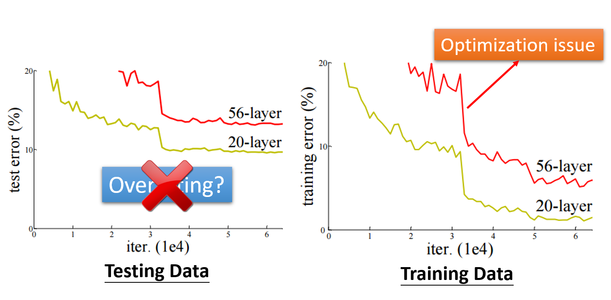
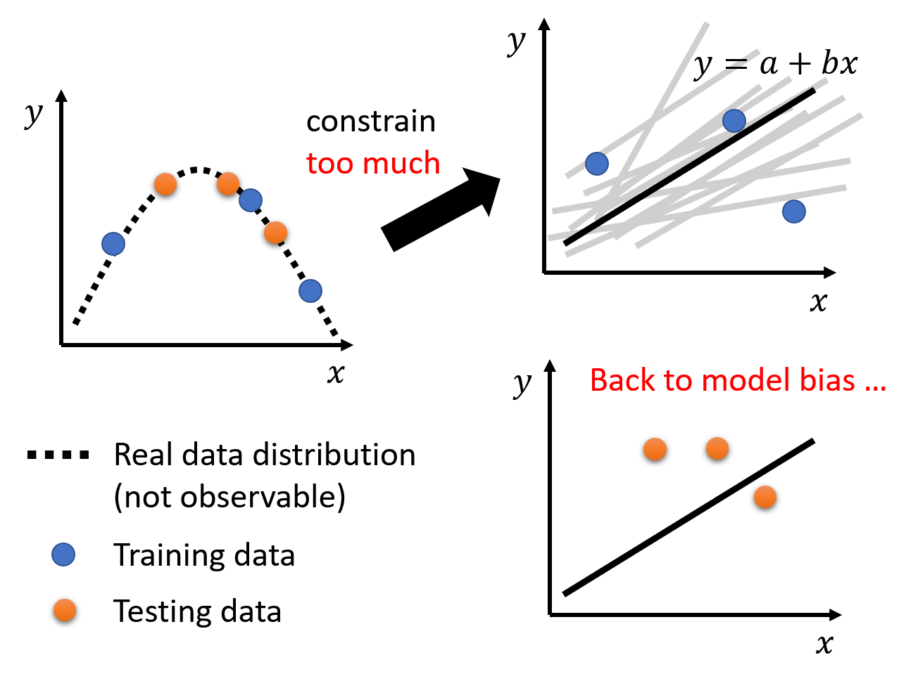
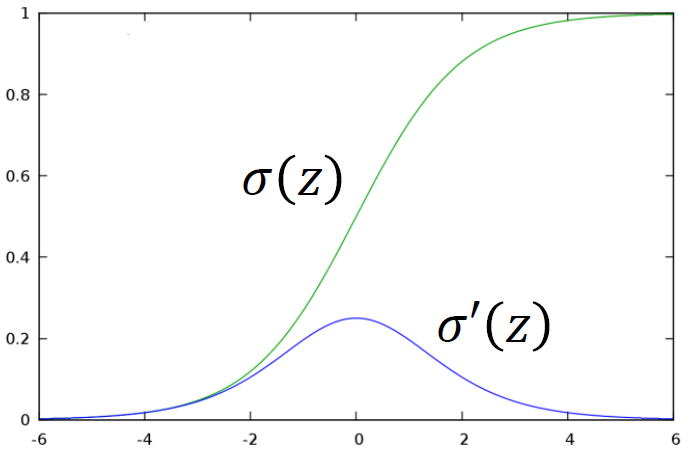
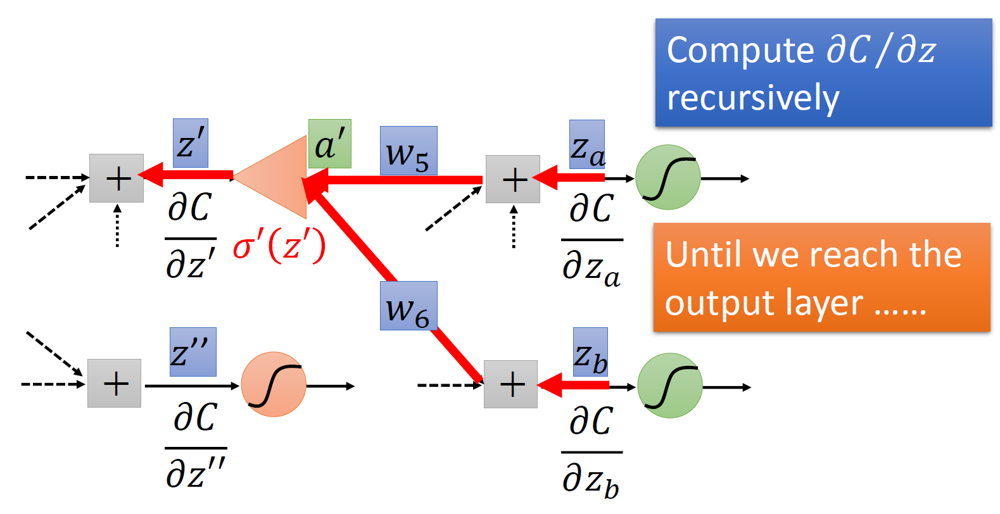

Lec 2: Deep Learning⚓︎
约 5786 个字 预计阅读时间 29 分钟
General Guidance⚓︎
我们可以将机器学习的任务（尤其是这门课的 HW）简单地抽象为：
- 给定一组训练数据 \(\{(\bm{x^1}, \hat{y}^1), (\bm{x^2}, \hat{y}^2), \dots, (\bm{x^N}, \hat{y}^N)\}\)，以及一组测试数据 \(\{\bm{x^{N+1}}, \bm{x^{N+2}}, \dots, \bm{x^{N+M}}\}\)
-
在训练数据上进行训练：

-
使用效果最好的模型 \(y = f_{\bm{\theta}^*}(\bm{x})\) 来标注测试数据，得到预测结果 \(\{y^{N+1}, y^{N+2}, \dots, y^{N+M}\}\)，然后上传到 Kaggle 评分
那我们该如何得到一个较好的模型呢？或者说当我们遇到一个效果不好的模型时，我们该如何改进呢？下面给出一张总体的方向图（相当 nice

可以看到，如果某个模型无论在训练数据，还是在测试数据上的损失都很小的话，那么这个模型的表现就很好了。但只要有一种损失很大的话，就需要通过各种方法来改进我们的模型，那下面就来逐一分析改善模型的思路：
-
模型偏移 (model bias) 的问题
-
原因：模型过于简单。比如有一个简单的模型 \(y = f_{\bm{\theta}}(\bm{x})\)，通过训练不断寻找合适的参数，获得 \(f_{\bm{\theta}^1}(\bm{x}), f_{\bm{\theta}^2}(\bm{x}), \dots\)。最后得到一个损失尽可能小的模型 \(f_{\bm{\theta}^*}(\bm{x})\)，但实际上相比其他模型 \(f^*(\bm{x})\) 它的损失还是很大。下图形象说明了这一点：

这就好比在大海里捞针，但实际上这根针并不在这片海域里 ...
-
解决方法：重新设计模型，使其变得更有弹性 (flexible)，具体做法可以是：
- 采取更多的特征点 (features)
- 进行更深的深度学习（使用更多的神经元或层）
-
-
优化 (optimization) 的问题
-
产生较大的损失有时不一定意味着模型的问题，也可能是优化策略选的不够好。比如前面介绍的梯度下降法就有可能陷入局部最小的问题，从而无法找到真正的最小值，下图形象展示了这一点：
这就好比在大海里捞针，但就是找不到这根针
-
解决方法：使用更强大的优化技术（之后会介绍）
-
如何判断是模型偏移问题还是优化问题？
-
比较不同模型的效果
如图所示，光看测试数据的结果，如果更深的网络效果更差，那么除了优化问题外还有可能是过拟合问题。然而，如果在训练数据上，更深的网络效果还是更差，那么就应该是优化问题了。
-
从更浅（层数更少）的网络（或其他模型）入手，更方便优化
- 如果更深的网络并没有在训练数据上得到更小的损失，那么就是优化问题了
- 因为相比浅的网络，深的网络更具弹性。我们可以让网络中的某些层对数据不做任何改动，这样可以让该网络等价于层数更少的网络。因此通过对模型的修改是可以让更深的网络得到不高于更浅的网络的损失，那么上述问题就应该来自于优化方法的局限了。
-
过拟合 (overfitting) 的问题：在训练数据上损失很小，但在测试数据上损失较大
- 一个极端的例子：假如有训练数据 \(\{(\bm{x^1}, \hat{y}^1), (\bm{x^2}, \hat{y}^2), \dots, (\bm{x^N}, \hat{y}^N)\}\)，使用模型 \(f(\bm{x}) = \begin{cases}\hat{y}^i & \exists \bm{x^i} = \bm{x} \\ random & otherwise\end{cases}\)。显然这个模型没什么用，但是它在训练数据上是没有损失的（因为就是简单的 copy 训练数据
） ，但在测试数据上损失很大（全部随机数，所以也有极小概率遇到损失很小的情况） -
原因：假设已知真实的数据分布（也就是最理想模型应有的样子，但无法直接观测；且由于数据是离散的，所以用虚线表示）以及训练数据（曲线上的部分点
） 。
如果我们采取弹性较大的模型，并且让该模型恰好经过这些训练数据点，那么我们可能会得到以下结果：
由于模型的弹性够大，对于非训练数据上的其他位置，它有着很高的自由变化程度，因而测试数据上的损失就会变得很大了，如下图所示：
-
解决方法：
-
使用更多的训练数据：这是一种简单有效的方法（但 HW 不能这样做）
-
数据增强 (data augmentation)：在训练数据的基础上得到一些稍作修改的副本，从而形成更多的训练数据
- 但是不要有太大或没意义的修改，比如对于一幅图像，对其左右翻转，适当缩放得到的图像都是 OK 的，但是上下翻转的图像就没什么实际意义了，因为通常人类不会阅读上下颠倒的图像
-
给模型一些限制 (constrain)，降低其弹性
-
举例：比如规定模型就是一个二次函数，那么会得到以下结果：

可以看到模型效果会好很多。
-
具体来说，可以通过以下方法来限制模型：
- 减少未知参数，或让网络的层之间共享一些参数
- 后者就是卷积神经网络 (CNN) 的做法，它是全连接 (fully-connected) 神经网络（也就是之前介绍的一般的神经网络）的特殊情况，之后会详细介绍
- 采用更少的特征点
- 提早结束训练 (early stopping)
- 正则化 (regularization)
- dropout
- 减少未知参数，或让网络的层之间共享一些参数
-
当然，限制不能太多，否则模型就会在训练数据上得到更大的损失，问题就回到了模型偏移上了

-
-
-
综上，我们需要权衡好模型偏移（与损失成正比）和模型的复杂性（或弹性）的关系，从而让模型在训练数据和测试数据上的损失都尽可能地小。下图展示了二者的关系：

交叉验证 (cross validation)
在机器学习的作业平台 kaggle 上，我们用提供的训练数据得到一些模型，然后用公开的 (public) 测试数据上使用这些模型。如果发现其中某个模型的损失很小，并不意味着这个模型能够在私有的 (private) 测试数据（另一批测试数据，但是要在 ddl 之后才会用）上具备相似的损失量。
还是拿之前介绍过的极端例子为例：\(f_k(\bm{x}) = \begin{cases}\hat{y}^i & \exists \bm{x^i} = \bm{x} \\ random & otherwise\end{cases}\)，其中 \(k\) 表示训练次数。如果训练次数足够大，那就有可能遇到某次训练下的模型，碰巧在公共的测试数据上损失很小的情况，而实际上在私有的测试数据上的表现情况是随机的、未知的。所以仅根据公有测试数据的结果对模型效果做判断是不明智的。这也说明了有些模型即使很烂，但在某些测试数据集上的表现远超人类的异常现象。
改进的做法是将原来的训练数据集分为两部分：一部分仍然作为训练数据，另一部分作为验证 (validation) 数据，不参与模型的训练中。当在这些训练数据中训练出一些模型后，我们将模型放到验证数据集上跑，观察损失有多大。根据这一损失选择的模型，无论是在公有的还是私有的测试数据集上，得到的损失应该是差不多的。尽管如此，还是不建议仅参考公有测试数据的损失来改进模型，因为这样可能出现过拟合的问题。

如果不清除该如何从原训练数据集中分出一部分作为验证数据，那么可以采用 N 折交叉验证 (N-fold cross validation)：
- 将训练数据集分为 N 等分
- 取其中 1 份作为验证数据，余下 N - 1 份作为训练数据，在此基础上训练模型
- 然后取另 1 份作为验证数据，余下 N - 1 份作为训练数据，在此基础上训练模型
- 以此类推，直到每份数据都曾作为验证数据过，此时得到模型的 N 次训练下的损失，取平均值作为最终的损失
- 比较不同模型的损失，取损失最小的模型，在整个训练数据集上重新训练，得到的模型用在测试数据上，这样在公有或私有的测试数据上的损失也差不多
- 一个极端的例子：假如有训练数据 \(\{(\bm{x^1}, \hat{y}^1), (\bm{x^2}, \hat{y}^2), \dots, (\bm{x^N}, \hat{y}^N)\}\)，使用模型 \(f(\bm{x}) = \begin{cases}\hat{y}^i & \exists \bm{x^i} = \bm{x} \\ random & otherwise\end{cases}\)。显然这个模型没什么用，但是它在训练数据上是没有损失的（因为就是简单的 copy 训练数据
-
错误匹配 (mismatch) 的问题
- 原因：训练数据和测试数据的分布不同
- 此时需要注意数据是如何生成的
- 除了 HW11 外，绝大多数 HW 没有这个问题
More Insight into Optimization⚓︎
Backpropogation⚓︎
在机器学习中，未知参数 \(\theta = \{w_1, w_2, \dots, b_1, b_2, \dots\}\) 通常会包含很多项。在使用梯度下降法时，每次都要对里面的每一项求偏微分；而且如果训练多次的话，计算量就会变得相当地大，因而效率就很低了。为了提高计算的效率，我们引入了一种新的计算技巧：反向传播 (backpropogation)。
数学基础：偏微分的链式法则
-
情况 1：若 \(y = g(x), z = h(y)\)
\[ \dfrac{dz}{dx} = \dfrac{dz}{dy} \dfrac{dy}{dx} \] -
情况 2：若 \(x = g(s), y = h(s) z = k(x, y)\)
\[ \dfrac{dz}{ds} = \dfrac{\partial z}{\partial x} \dfrac{\partial x}{\partial s} + \dfrac{\partial z}{\partial y} \dfrac{\partial y}{\partial s} \]
记第 \(n\) 项数据 \(x^n\) 在神经网络中，训练得到的预测值 \(y^n\) 与实际值 \(\hat{y}^n\) 之差为 \(C^n\)，并且记损失 \(L(\theta) = \sum\limits_{n=1}^n C^n(\theta)\)（\(N\) 项数据的误差和
现在考虑如何计算 \(\dfrac{\partial C}{\partial w}\)——根据链式法则，我们可以将其转化为 \(\dfrac{\partial z}{\partial w} \dfrac{\partial C}{\partial z}\)。其中这个 \(z\) 是通过数据输入、权重和偏移计算得到的，如下图所示（简化版本

现在计算就被分为两部分了，这两部分同时也是反向传播的组成部分：
- 前递 (forward pass)：对所有的参数，计算 \(\dfrac{\partial z}{\partial w}\)
- 后递 (backward pass)：对所有的激活函数输入值 \(z\)，计算 \(\dfrac{\partial C}{\partial z}\)
其中前递的计算相当简单：\(\dfrac{\partial z}{\partial w}\) 的值就是与权重相关联的输入数据，因此在训练的过程中，我们顺手就可以将这些值个计算出来。拿上图的例子来说，\(\dfrac{\partial z}{\partial w_1} = x_1, \dfrac{\partial z}{\partial w_2} = x_2\)。
例子
对于更多次的训练，道理也是一样简单。
难点在于计算后递，乍看上去好像无从下手。事实上，后递的计算又一次用到了链式法则：\(\dfrac{\partial C}{\partial z} = \dfrac{\partial a}{\partial z} \dfrac{\partial C}{\partial a}\)，其中 \(a = \sigma(z)\)（sigmoid 函数
-
\(\dfrac{\partial a}{\partial z} = \sigma'(z)\)，因为我们直到 \(z\) 的值（前面的计算中已经算过了
） ，所以 \(\sigma'(z)\) 就是一个常量sigmoid 函数及其导函数的图像
 -
\(\dfrac{\partial C}{\partial a}\)：又又一次用到链式法则，借助下图来理解这个过程：

可以看到，\(a\) 的值会影响到 \(z', z''\)，因此 \(\dfrac{\partial C}{\partial a} = \dfrac{\partial z'}{\partial a} \dfrac{\partial C}{\partial z'} + \dfrac{\partial z''}{\partial a} \dfrac{\partial C}{\partial z''}\)。其中 \(\dfrac{\partial z'}{\partial a}, \dfrac{\partial z''}{\partial a}\) 的值很容易计算，就是对应的权重 \(w_3, w_4\)，而 \(\dfrac{\partial C}{\partial z'}, \dfrac{\partial C}{\partial z''}\) 的值我们先暂时假设它们是已知量
总结一下：\(\dfrac{\partial C}{\partial z} = \sigma'(z) \Big[w_3 \dfrac{\partial C}{\partial z'} + w_4 \dfrac{\partial C}{\partial z''}\Big]\)。最后有待求解的就是刚才假设已知的那两个偏导数，这里我们分为两种情况讨论：
-
如果它们位于最后一次的训练过程中（即在输出层中
） ，那么：\[ \dfrac{\partial C}{\partial z'} = \dfrac{\partial y_1}{\partial z'} \dfrac{\partial C}{\partial y_1} \quad \dfrac{\partial C}{\partial z''} = \dfrac{\partial y_2}{\partial z''} \dfrac{\partial C}{\partial y_2} \]这些量都是相当好计算的，所以结果自然就求出来了
-
如果是在中间的训练过程中，那计算思路如下图所示：
以 \(z'\) 为例稍作解释：要求 \(\dfrac{\partial C}{\partial z'}\)，可以像求 \(\dfrac{\partial C}{\partial z}\) 那样继续借助后面的计算值 \(z_a, z_b\) 求解，连计算思路都是一样的。如此往复计算，直到计算到达输出层（即第一种情况时
） ，我们可以依次往前计算前面所有的这些偏导数了！
事实上，在计算形如 \(\dfrac{\partial C}{\partial z}\) 这类偏导数时，我们可以直接通过输出值 \(y_1, y_2, \dots\) 按反方向计算，这也就是该算法名称的由来。

总结

Critical Points⚓︎
在训练模型的时候，我们可能会遇到模型的损失无法进一步减小，也就是无法继续优化的情况。以梯度下降法为例，当梯度接近 0 的时候就会出现这种情况，如下图所示：

当梯度为 0 时，除了前面介绍过的局部最小 (local minima) 的情况，还有一种情况是位于鞍点 (saddle point)：在某些方向上它是局部最小值，但是在另外的方向上它是局部最大值，因而可以逃脱局部最小值的困境。从形状看像一个马鞍，因而得名。我们将这两种情况统称为关键点 (critical point)。

那么现在的问题是：已知梯度为 0，我们该如何区分这属于哪一类关键点呢？这里就要用到一些微积分和线性代数的知识了。
首先要利用泰勒级数 (Taylor Series) 进行近似表示。假设某个参数下的损失为 \(L(\bm{\theta})\)，并且已知 \(\bm{\theta}'\) 附近很小的一个范围内的有一个 \(\bm{\theta}\)，那么 \(L(\bm{\theta})\) 可以被表示为：
其中：
- 梯度 \(\bm{g} = \nabla L(\bm{\theta}')\) 是一个向量，向量内元素 \(\bm{g}_i = \dfrac{\partial L(\bm{\theta}')}{\partial \bm{\theta}_i}\)
- 黑塞矩阵 (Hessian matrix) \(H\) 的元素为 \(H_{ij} = \dfrac{\partial^2}{\partial \bm{\theta}_i \partial \bm{\theta}_j} L(\bm{\theta}')\)

如果遇到关键点的话，\(\bm{g} = 0\)，那么中间项就可以消掉，只剩下：
我们正是通过最后一项来判断关键点的类型。为了便于后续讲述，先令 \(\bm{v}^T H \bm{v} = (\bm{\theta} - \bm{\theta}')^T H (\bm{\theta} - \bm{\theta}')\)。对于所有的 \(\bm{v}\)，如果：
- \(\bm{v}^T H \bm{v} > 0\)，那么对于在 \(\bm{\theta}'\) 附近的 \(\bm{\theta}\)，满足 \(L(\bm{\theta}) > L(\bm{\theta}')\)，因此这是一个局部最小点
- 等价表述：当 \(H\) 为正定 (positive definite) 矩阵，即所有特征值 (eigen values) 均为正数时，表明到达了局部最小点
- \(\bm{v}^T H \bm{v} < 0\)，那么对于在 \(\bm{\theta}'\) 附近的 \(\bm{\theta}\)，满足 \(L(\bm{\theta}) < L(\bm{\theta}')\)，因此这是一个局部最大点
- 等价表述：当 \(H\) 为负定 (negative definite) 矩阵，即所有特征值均为负数时，表明到达了局部最大点
- 有时 \(\bm{v}^T H \bm{v} > 0\)，而有时 \(\bm{v}^T H \bm{v} < 0\)，那么这是一个鞍点
- 等价表述：当 \(H\) 的特征值有正有负时，表明到达了鞍点
例子
假设有一个很烂的模型 \(y = w_1 w_2 x\)，且已知训练数据 \((x, \hat{y}) = (1, 1)\)（仅 1 组
用 MSE 计算损失为：\(L = (\hat{y} - w_1 w_2 x)^2 = (1 - w_1 w_2)^2\)。然后计算每个参数关于损失的一阶和二阶微分，分别作为梯度和黑塞矩阵的元素：

当 \(w_1 = w_2 = 0\) 时，发现梯度为 0，那么该点就是关键点。而且此时黑塞矩阵 \(H = \begin{bmatrix} 0 & -2 \\ -2 & 0\end{bmatrix}\)，特征值 \(\lambda_1 = 2, \lambda_2 = -2\)，因此可以判定该点为鞍点。
对于鞍点而言，黑塞矩阵除了能够用于判断外，还能为我们指示离开鞍点，即更新参数的方向。现在假设 \(\bm{u}\) 是 \(H\) 的一个特征向量，\(\lambda\) 是 \(u\) 的特征值，那么：
因此，如果 \(\lambda < 0\) 的话，那么 \(\bm{u}^T H \bm{u} < 0\)。回到前面关于损失的泰勒展开式 \(L(\bm{\theta}) = L(\bm{\theta}') + \dfrac{1}{2} (\bm{\theta} - \bm{\theta}')^T H (\bm{\theta} - \bm{\theta}')\)，令 \(\bm{u} = \bm{\theta} - \bm{\theta}'\)，那么 \(\bm{\theta} = \bm{\theta}' + \bm{u}\)。由于此时 \(L(\bm{\theta}) < L(\bm{\theta}')\)，即 \(\bm{\theta}'\) 位于局部最大点，那么从该点沿 \(\bm{u}\) 的方向走的话，损失就会变小，从而离开局部最大点。总之，通过黑塞矩阵的特征向量，我们总能设法离开鞍点。
例子
接着前面的例子，第二个特征值为 \(\lambda_2 = -2\)，对应特征向量 \(\bm{u} = \begin{bmatrix}1 \\ 1\end{bmatrix}\)。只要沿着 \(u\) 的方向更新参数，损失就会减小，如下面的误差曲面所示：

实践上，一般并不会实现这种方法，因为计算二次微分、特征值和特征向量等等运算太过复杂，效率不高。
那么鞍点和局部最小点这两种关键点，哪个更为常见呢？

可以看到，二维平面上的局部最小点，可能到三维乃至更高位的空间内就是一个鞍点，因为更多的维数意味着更多的逃离局部最小的可能。所以当参数足够多的时候，鞍点的数量可能相对更多一些。
事实上，上述理论有实践经验的支撑，如下图所示：

其中横轴表示最小值比率 (minimum ratio)，即局部最小点在所有关键点中的占比，计算公式为：
可以看到，当我们通过不断的训练将损失降得尽可能低时，最小值比率维持在 0.5-0.6 之间，也就是说始终没法达到真正的局部最小值（最小值比率 = 1
Batches⚓︎
前面提到过，对于参数量很大的模型，会使用分批 (batch) 使用梯度下降法来更新参数，而不是一次性对所有参数求梯度。下面就通过对比更新小批量和大批量参数的效果，来说明为何需要分批更新。
假如模型有 N = 20 的参数，现提供两种（极端的）大小：大批的大小为 N，小批的大小为 1。下面通过误差曲面来分析两者的优化效果：

- 大批量：更新时间长（要处理 20 个参数
） ，但是优化效果很好（powerful） - 小批量：更新时间很短（1 次只更新 1 个参数
） ，但是有很多噪点（noisy）
因此直接看貌似看不出两者有哪个能占据很大优势。其实上面只是做了理论层面的分析，实际上在机器学习中常常用到 GPU，而 GPU 的一大优势在于支持并行计算，因此我们得重新考虑时间上的估量了：
-
大批量并不意味着需要花更长的时间计算梯度（除非批量太大）

-
在一个时期 (epoch) 内，小批量反而需要花费更多的时间
尽管小批量在时间上并不占据太大的优势，但是它的强大之处在于能确保训练模型的精度，使模型具备更好的表现。
例子

之所以大批量不好，并不是因为模型偏移或过拟合，而是优化上的不足：

- 对于大批量，尤其是全批量，未知参数关于损失的函数通常只有少数几条甚至一条，因此每次更新都顺着几乎既定的路径走。如果遇到了关键点，那么就很容易卡在那里不动了
- 对于小批量，由于每次只更新一小部分，因此会产生不同的损失函数。即使模型在优化的时候卡在某个损失函数上，只需更新一下，就跳到另一个损失函数，从而有很大概率避开了关键点
下面从另一个角度解释原因。对于训练数据上的损失函数，不同的局部最小点也有好坏之分，我们会认为狭窄的局部最小点是不利于测试的，而平坦的局部最小点相对而言比较好一些。如下图所示，假如训练数据上和测试数据上的损失函数有些错误匹配 (mismatch)，那么局部最小点的好坏之分就表现得非常明显了：平坦的局部最小点在测试数据上没多大变动，而狭窄的局部最小点在测试数据上的损失就一下子变得很高。对于小批量而言，由于它的更新策略更具灵活性（noisy

总结

批量大小是一个超参数 (hyperparameter)，我们可以根据需要进行手工调整。
Momentum⚓︎
在梯度下降法中，当梯度接近于 0 的时候，就会停在这些点上了。但是在物理世界中，即使某段路相当平坦（鞍点
对比

在正式介绍该方法前，先来总结一下一般的梯度下降法，如下图所示。由于比较直观，这里就不再赘述了。

现在引入动量，那么每步的移动就是上一步的移动与当前梯度的差，具体来说：
- 令初始点为 \(\bm{\theta}^0\)，移动量 \(\bm{m}^0 = 0\)，梯度 \(\bm{g}^0\)
- 第一步移动 \(\bm{m}^1 = \lambda \bm{m}^0 - \eta \bm{g}^0\)，下一个目标点 \(\bm{\theta}^1 = \bm{\theta}^0 + \bm{m}^1\)，然后计算梯度 \(\bm{g}^1\)
- 第二步移动 \(\bm{m}^2 = \lambda \bm{m}^1 - \eta \bm{g}^1\)，下一个目标点 \(\bm{\theta}^2 = \bm{\theta}^1 + \bm{m}^2\)，然后计算梯度 \(\bm{g}^2\)
- 以此类推 ...
上述过程如下所示：

观察发现，第 \(i\) 次移动量为前几次梯度 \(\bm{g}^0, \bm{g}^1, \dots, \bm{g}^{i-1}\) 的加权和，比如：
有了动量后，对于本节最开始提到的例子，现在的优化过程就可能像下图一样，不会被某些关键点给困住。
Adaptive Learning Rate⚓︎
评论区